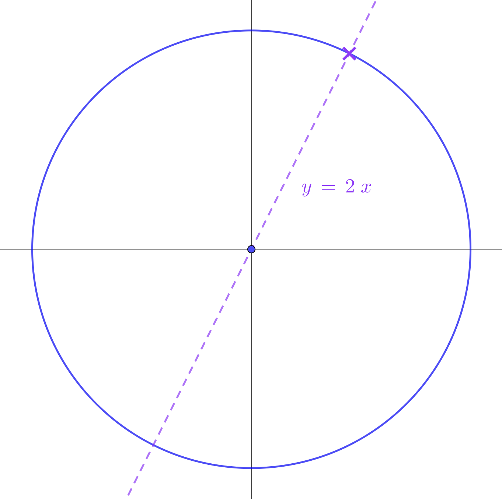

Welcome to solving equations with circular functions
This stage builds on your understanding of the definitions of circular functions. Now you'll learn how to solve equations involving sin, cos, and tan. You'll discover how to find all solutions to equations like \(\sin\theta = 0.4\) using the unit circle and symmetry.
Use the unit circle diagram to help you visualize solutions!
 Dr Brian Brooks
Dr Brian Brooks
Mathematics InSight
Solving equations with circular functions

\[\theta = \sin^{-1}0.4 = 23.58°\]
There are an infinite number of solutions to an equation like \(\sin\theta = 0.4\), and this is only the smallest positive solution. This page is all about finding those other solutions.
Finding them is a question of symmetry, and you can either use this unit circle to do your visualisation or you can use graphs. I am a great believer in the advantages of the unit circle over graphs, and that is the approach I take here.
If you have always used graphs to find solutions to equations like this, I strongly recommend that you give this way a go. It has many advantages: for example, the unit circle is easy to sketch when solving a problem, and easy to visualise without sketching. It's easy to remember that the coordinates of a point are \((\cos\theta, \sin\theta)\) and that the gradient of the radius is \(\tan\theta\). On the other hand, for graphs, you have to remember quite a bit of detail about three different graphs, and then it's much harder to use symmetry to read off the solutions.
You might find it takes some getting used to, but I don't think you will ever look back!
If the \(y\) coordinate of the blue point is \(0.4\), find the angle \(\theta\).
What other point on the circle has the same \(y\) coordinate as the blue point?


Symmetry is the key (as it is with graphs), so
\(180 - 23.58 = 156.42°\) is another solution of \(\sin\theta = 0.4\)


\[-203.58° \text{ and } -336.42° \text{ are also solutions of } \sin\theta = 0.4\]
\[\theta = 23.58°, 156.42°, 383.58°, 516.42° \ldots\]
\[-203.58°, -336.42°, -563.58°, -696.42° \ldots\]
The dots ... mean "keep adding or subtracting \(360°\) as often as you like."
Play around with the various solutions we have already found, and you will soon see that only the following produce other solutions:
| \(180 - \alpha\) | \(\alpha + 360\) | \(\alpha - 360\) |
The point of asking this question is to get to some easy rules for solving sin, cos, and tan equations that don't even need the unit circle, let alone graphs.
Here is an easy rule to remember:
• for equations with sin, take your first answer from \(180\).
• then keep adding or subtracting \(360°\) as often as you like to each of your solutions.
Later, we will see that \(180 + \alpha\) works for tan and \(-\alpha\) works for cos.
The last two options, \(\alpha \pm 360\), work for sin, cos, and tan.
Next, we will adapt the previous method to solve the equation \(\cos\theta = -0.7\).
First, find another point on the circle with the same \(x\) coordinate as the blue point.


\[\theta = 134.43°, 225.57°, 494.43°, 585.57° \ldots\]
\[-134.43°, -225.57°, -494.43°, -585.57° \ldots\]
Play around with the various solutions we have already found, and you will soon see that only the following produce other solutions:
| \(-\alpha\) | \(\alpha + 360\) | \(\alpha - 360\) |
This is the second easy rule to remember:
• for cos, take the negative of your first answer.
• then keep adding or subtracting \(360°\) as often as you like to each of your solutions.
Use this diagram and a calculator to solve the equation
\(\tan\theta = 2\)

Use this diagram and a calculator to solve the equation
\(\tan\theta = 2\)


\[\theta = 63.43°, 243.43°, 423.43°, 603.43° \ldots\]
\[-116.57°, -296.57°, -476.57°, -656.57° \ldots\]
Play around with the various solutions we have already found, and you will soon see that only the following produce other solutions:
| \(180 + \alpha\) | \(\alpha + 360\) | \(\alpha - 360\) |
Here is the third easy rule to remember:
• for tan, add \(180\) to your first answer.
• then keep adding or subtracting \(360°\) as often as you like to each of your solutions.
Congratulations on completing this stage!
You've now mastered solving equations with circular functions! You've learned to use the unit circle to find all solutions to equations involving sin, cos, and tan. By understanding symmetry and applying the simple rules for each function, you can now solve these equations with confidence and insight.
Keep practising these equation-solving techniques—they form the foundation for more advanced work with circular functions!
Dr Brian Brooks
Mathematics InSight